import pandas as pd
import numpy as np
import statsmodels.formula.api as smf
np.random.seed(1983)
galton = pd.read_csv('assets/GaltonFamilies.csv', index_col=0)
galton_male = galton[galton['gender'] == 'male']
# Randomly select one son per family
galton_heights = (
galton_male
.groupby("family", group_keys=False)
.sample(n=1)
[["father", "childHeight"]]
.rename(columns={"childHeight": "son"})
)10 Linear Regression
1 Motivation and overview
1.1 Testing conditional dependence
Up to this point, we have focused on testing associations between pairs of variables. However, in data science applications, it is very common to study three or more variables jointly.
For pairs of variables, say \(x\) and \(y\), one variable may be considered as the explanatory variable (let us take \(x\)) and the other the response variable (\(y\)). Asking whether \(y\) depends on \(x\) amounts to ask whether the conditional distribution of \(y\) given \(x\) varies when \(x\) varies. For instance, one may state that body height depends on sex by showing that the distribution of body heights is not same among males than among females. In general statistical terms, testing for independence can be expressed as the null hypothesis:
\[ H_0: p(y \mid x) = p(y) \tag{1}\]
Let us assume now we are considering multiple explanatory variables \(x_1, ...,x_p\) and a response variable \(y\). We are still interested in the association of one particular explanatory variable, say \(x_j\) with the response variable \(y\) but shall take into consideration all the other explanatory variables. In other words, we would like to know whether \(y\) depends on \(x_j\) everything else being the same. For instance, we may observe that drinking coffee positively correlates with lung cancer, but, neither among smokers, nor among non-smokers, drinking coffee associates with lung cancer. In this example, everything else being same (i.e. for same smoking status), there is no association between lung cancer and drinking coffee. In this thought experiment, the association found in the overall population probably comes from the fact that smokers tend to be coffee drinkers. Generally, we ask whether the conditional distribution of \(y\) given all explanatory variables varies when \(x_j\) alone varies. Hence, to move beyond pairs of variables, we need a strategy to assess null hypotheses such as:
\[ H_0: p(y|x_1,...,x_j,...x_p) = p(y|x_1,...,x_{j-1}, x_{j+1},...x_p) \tag{2}\]
Considered so generally, i.e. for any type of variable \(y\) and for any number and types of explanatory variables \(x_1,...,x_p\), the null hypothesis in Eq. 10.2 is impractical because:
We need to be able to deal with any type of distribution: Gaussian, Binomial, Poisson, but also mixtures, or even distributions that are not functionally parameterized.
We need to be able to condition on continuous variables. Conditioning on categorical variables leads to obvious stratification of the data. However, how shall we deal with continuous ones? Shall we do some binning? Based on what criteria? Could the binning strategy affect the results?
Even when all variables are categorical, there is a combinatorial explosion of strata, as each stratum gets further split by every new added variables (say by smoking status, and further by sex, and further by diabetes,…). For instance, there are \(2^p\) different strata for \(p\) binary variables. This combinatorial explosion makes the analysis difficult. Moreover the statistical power, which is driven by the number of samples in each stratum, gets drastically reduced.
1.2 Linear regression
This Chapter introduces linear regression as an effective way to deal with these three issues. Linear regression addresses these three issues by making the following assumptions:
The conditional distribution \(p(y | x_1,...,x_p)\) is a Gaussian distribution whose variance is independent of \(x_1,...x_p\), simplifying greatly issue number 1.
The conditional expectation of \(y\) is a simple linear combinations of the explanatory variables, that is:
\[ \mathbb{E}[y|x_1,...,x_p] = \beta_0 + \beta_1 x_1+...\beta_p x_p \tag{3}\]
We can think of Eq. 10.3 as a simple score for which explanatory variables contribute in a weighted fashion and independently of each other to variations in the expected value of the response. For instance, one could model the expected body height of an adult as 1:
\[ \begin{aligned} \mathbb{E}[\text{height} \mid \text{sex}, \text{mother}, \text{father}] &= 165 + 15 \times \text{sex} + 0.5 \times (\text{mother} - 165) \\ &\quad + 0.5 \times (\text{father} - 180) \end{aligned} \]
where sex is 1 for male and 0 for female, and mother and father designate each parent’s body height.
The linear model in Eq. 10.3, can deal with continuous as well as discrete explanatory variables, solving the issue number 2. Moreover, because Eq. 10.3 models independent additive contributions of the explanatory variables, it has just one parameter per explanatory variable. The effects of the explanatory variables do not depend on the value of the other variables. These effects do not change between strata. Hence, linear regression does not suffer from a combinatorial explosion of strata (issue number 3).
1.3 Limitations
These assumptions of linear regression make the task easier, but how limiting are they?
The Gaussian assumption is limiting. We cannot deal with binary response variables for instance. The next chapter will address such cases.
The assumption that variance is independent of the strata, if violated, can be a problem for fitting this model as well as for statistical testing. We show how to diagnose such issue in Section 10.3.
The assumption of additivity in Eq. 10.3 seems more limiting than it actually is. First, there are many real-life situations where additivity of the effects of the explanatory variables turns out to be reasonable. Moreover, there is always the possibility to pre-compute non-linear transformations of explanatory variables and include them to the model. For instance this model of expected body weight is a valid linear model with respect to body height cubed – it just needs the cube to be pre-computed2:
\[\mathbb{E}[\text{weight}| \text{height}] = \beta_0 + \beta_1\text{height} ^3\] All in all, linear regression turns out to be in practice often reasonable.
1.4 Applications
Linear regression can be used for various purposes:
To test conditional dependence. This is done by testing the null hypothesis: \[H_0: \beta_j=0.\]
To estimate the effects of one variable on the response variable. This is done by providing an estimate of the coefficient \(\beta_j\).
To predict the value of the response variable given values of the explanatory variables. The predicted value is then an estimate of the conditional expectation \(\mathbb{E}[y|x]\).
To quantify how much variation of a response variable can be explained by a set of explanatory variables.
This Chapter explains first univariate linear regression using a historical dataset of body height. We will then go to the multivariate case using an example from baseball. Finally we will assess what is the practical impact of violations of the modeling assumptions, and how to diagnose them. A substantial part of the Chapter is based on an adaptation of Rafael Irizzary’s book.
2 Univariate regression
2.1 Galton’s height dataset
We start with linear regression against a single variable, or univariate regression. We use the dataset from which regression was born. The is an example from genetics. Francis Galton3 studied the variation and heredity of human traits. Among many other traits, Galton collected and studied height data from families to try to understand heredity4. While doing this, he developed the concepts of correlation and regression, as well as a connection to pairs of data that follow a normal distribution. A very specific question Galton tried to answer was: how well can we predict a child’s height based on the parents’ height?
We have access to Galton’s family height data through the HistData R dataset, that can be downloaded and imported to python. This data records height in inches from several dozen families: mothers, fathers, daughters, and sons. To imitate Galton’s analysis, we will create a dataset with the heights of fathers and a randomly selected son of each family:
Plotting clearly shows that the taller the father, the taller the son.
from plotnine import *
(
ggplot(galton_heights, aes('father', 'son'))
+ geom_point(alpha=0.5)
+ theme(figure_size=(4, 4))
)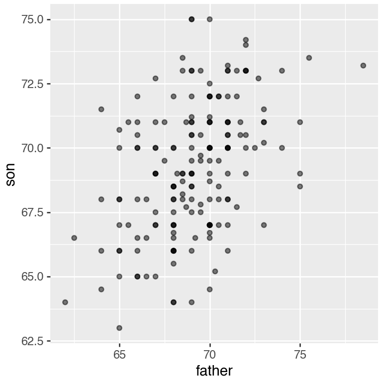
One can visualize more concretely the conditional distributions of the son heights given the father heights by stratifying the father heights (i.e. \(p(\text{son} | \text{father})\)):
galton_heights["father_strata"] = (
galton_heights["father"]
.round()
.astype(int)
)
(
ggplot(galton_heights, aes('factor(father_strata)', 'son'))
+ geom_boxplot()
+ geom_jitter(color='black', alpha=0.5, width=0.1)
+ theme(figure_size=(4, 4))
)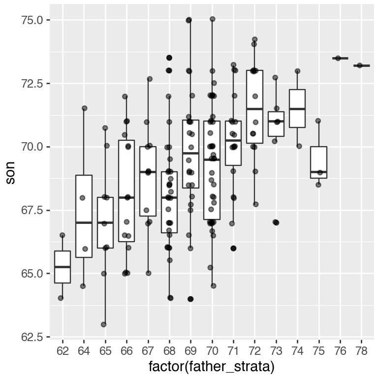
The centers of the groups are increasing with the father height, giving a first glimpse as how hereditary body height is.
By strata, we can estimate the conditional expectations. In our example, we end up with the following prediction for the son of a father who is 72 inches tall:
conditional_avg = (
galton_heights[
galton_heights["father"].round() == 72
]["son"]
.mean()
.item()
)
conditional_avg71.49285714285715Furthermore, these centers appear to follow a linear relationship. Below we plot the averages of each group. If we take into account that these averages are random variables, the data is consistent with these points following a straight line:
means = galton_heights.copy()
means['father'] = means['father'].round()
son_conditional_avg = means.groupby(
'father', as_index=False)['son'].mean()
(
ggplot(son_conditional_avg, aes('father', 'son'))
+ geom_point()
+ labs(x='father', y='son_conditional_avg')
+ theme(figure_size=(3, 3))
)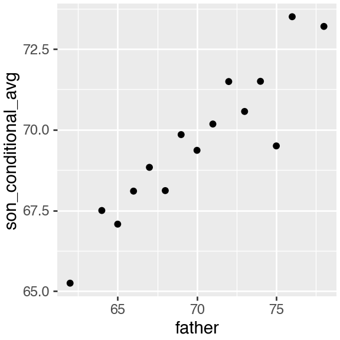
Hence this plot suggests that the linear model:
\[ \mathbb{E}[\text{son} | \text{father}] =\beta_0 + \beta_1 \text{father}\]
is reasonable. Fitting such a model would allow us to avoid doing stratifications, as we could continuously estimate the expected value of son’s height. How do we estimate these coefficients? To this end, we need a bit more theory.
2.2 Maximum likelihood and least squares estimates
Fitting a linear regression, i.e. estimating the parameters, is based on a widely used principle called maximum likelihood. The maximum likelihood principle consists in choosing as parameter values those for which the data is most probable. What is the probability of our data?
Here we model the probability of the heights of the sons given the heights of their fathers. Generally, we will always consider the values of the explanatory variables to be given. Furthermore we will assume that, conditioned on the values of the explanatory variable, the observations are independent. Here, this means that the height of the sons are independent given the heights of the fathers. Hence the likelihood is: \[ p(\text{Data}|\beta_0,\beta_1) = \prod_i p(y_i|x_i, \beta_0, \beta_1) \]
Hence, we look for the values of the coefficients \(\beta_0\) and \(\beta_1\) to maximimize \(\prod_i p(y_i|x_i, \beta_0, \beta_1)\).
Taking the logarithm of the likelihood, which is a monotonically increasing function, does not change the value of the optimal parameters. Plugging in furthermore the density of the Gaussian 5 and discarding terms not affected by the values of \(\beta_0\) \(\beta_1\), we obtain that:
\[ \begin{align} \arg \max_{\beta_0, \beta_1}\prod_i p(y_i|x_i, \beta_0, \beta_1) &= \arg \max_{\beta_0, \beta_1}\sum_i \log(N(y_i|x_i, \beta_0, \beta_1))\\ &= \arg \min_{\beta_0, \beta_1}\sum_i (y_i - (\beta_0 + \beta_1x_i))^2 \end{align} \]
The differences between the observed values and their expected values denoted \(\epsilon_i = y_i - (\beta_0 + \beta_1x_i)\) are called the errors. Hence, maximizing the likelihood of this model is equivalent to minimizing the sum of the squared errors. One talks about least squares estimates (LSE).
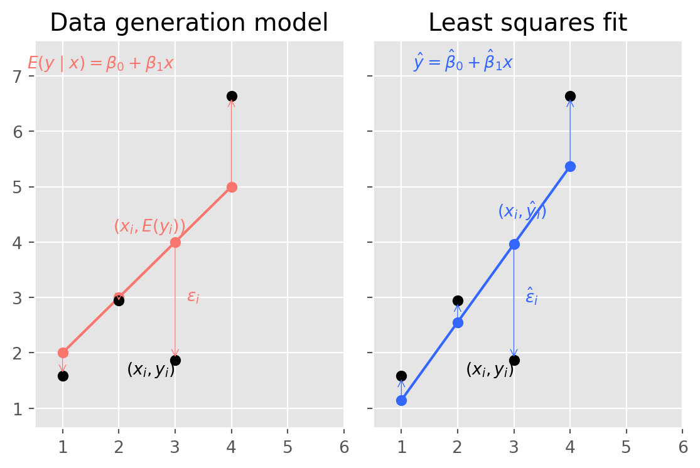
2.3 Interpretation of the fitted coefficients
Minimizing the squared errors for a linear model can be solved analytically, see Section B.4. We obtain that our estimated conditional expected value, denoted \(\hat y\) is:
\[ \hat y= \hat \beta_0 + \hat \beta_1x \mbox{ with slope } \hat \beta_1 = \rho \frac{\sigma_y}{\sigma_x} \mbox{ and intercept } \hat \beta_0=\mu_y - \hat \beta_1 \mu_x \tag{4}\]
where:
- \(\mu_x,\mu_y\) are the means of \(x\) and \(y\)
- \(\sigma_x,\sigma_y\) are the standard deviations of \(x\) and \(y\)
- \(\rho = \frac{1}{n} \sum_{i=1}^n \left( \frac{x_i-\mu_x}{\sigma_x} \right)\left( \frac{y_i-\mu_y}{\sigma_y} \right)\) is the Pearson correlation coefficient between \(x\) and \(y\).
We can rewrite this result as:
\[ \hat y = \mu_y + \rho \left( \frac{x-\mu_x}{\sigma_x} \right) \sigma_y \] If there is perfect correlation, the regression line predicts an increase in the response by the same number of standard deviations. If there is 0 correlation, then we don’t use \(x\) at all for the prediction and simply predict the population average \(\mu_y\). For values between 0 and 1, the prediction is somewhere in between. If the correlation is negative, we predict a reduction instead of an increase. Note that if the correlation is positive but smaller than 1, our prediction of \(y\) is closer to its average than \(x\) to its average (in standard units).
In Python, we can obtain the least squares estimates using the smf.ols function:
model = smf.ols('son ~ father', data=galton_heights).fit()
model.paramsIntercept 38.651452
father 0.442552
dtype: float64The most common way we use smf.ols is by using the character ~ to let smf.ols know which is the variable we are predicting (left of ~) and which we are using to predict (right of ~). The intercept is added automatically to the model that will be fit.
Here we add the regression line using geom_smooth(method="lm"), which in Python (plotnine) computes and adds a linear regression line to a plot along with confidence intervals:
(
ggplot(galton_heights, aes('father', 'son'))
+ geom_point(alpha=0.5)
+ geom_smooth(method='lm')
+ theme(figure_size=(3, 3))
)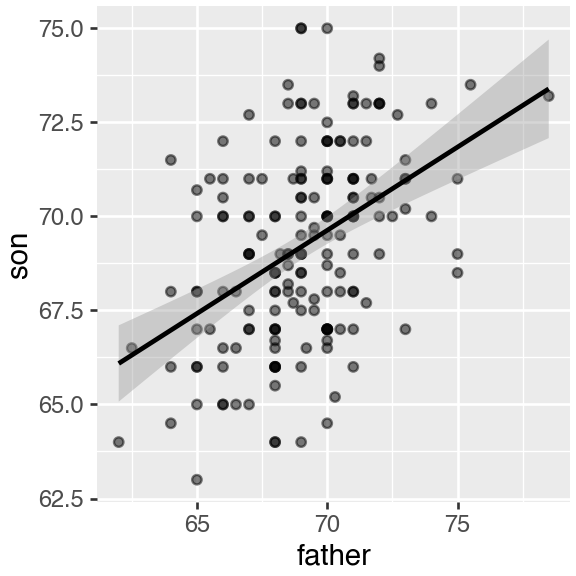
In our example, the correlation between sons’ and fathers’ heights is about 0.5. Our predicted value for the son’s height \(y =\) 71.49 for a 72-inch father was only 0.88 standard deviations larger than the average son, in contrast to the father’s height, which was 1.14 standard deviations above average.
This is why we call it regression: the son regresses to the average height. In fact, the title of Galton’s paper was: Regression toward mediocrity in hereditary stature.
It is a fact that children of extremely tall parents are taller than average, yet typically shorter than their parents. You can appreciate it on Figure Fig. 10.1. Extremely tall parents have an extreme combinations of alleles, and have also benefited from environmental factors by chance, which may not repeat in the next generation. The same phenomenon, called regression toward the mean, happens in sport. Athletes who perform extremely well one year are certainly good (high expectation) but have also probably been lucky (a positive error) so they are more likely to perform relatively worse the next year, etc. This phenomenon is ubiquitous and can lead to fallacies.6
2.4 Predicted values are random variables
Once we fit our model, we can obtain predictions of \(y\) by plugging the estimates into the regression model. For example, if the father’s height is \(x\), then our prediction \(\hat{y}\) for the son’s height is:
\[\hat{y} = \hat{\beta}_0 + \hat{\beta}_1 x\]
When we plot \(\hat{y}\) versus \(x\), we see the regression line.
Keep in mind that the prediction \(\hat{y}\) is also a random variable and mathematical theory tells us what the standard errors are. If we assume the errors are normal, or we have a large enough sample size, we can use theory to construct confidence intervals as well. In fact, the ggplot layer geom_smooth(method = "lm") that we previously used plots \(\hat{y}\) and surrounds it by confidence intervals:
(
ggplot(galton_heights, aes('son', 'father'))
+ geom_point()
+ geom_smooth(method='lm')
+ theme(figure_size=(3, 3))
)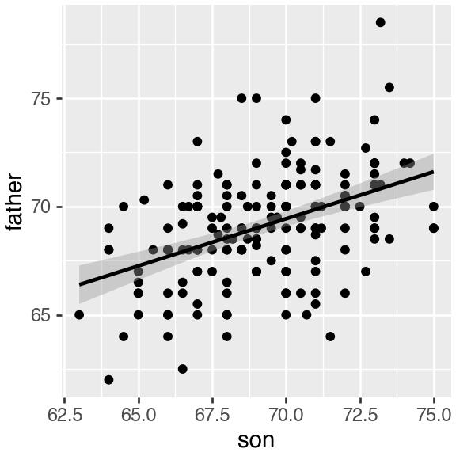
The Python method get_prediction of an smf.ols object takes the data as input and returns the prediction. If requested, the standard errors and other information from which we can construct confidence intervals are provided:
y_hat = model.get_prediction(galton_heights)
y_hat.summary_frame().columnsIndex(['mean', 'mean_se', 'mean_ci_lower', 'mean_ci_upper', 'obs_ci_lower',
'obs_ci_upper'],
dtype='object')2.5 Explained variance
Any dataset will give us estimates of the model, but how well does the model represent our data? To investigate this we can compute quality metrics and visually assess the model, which is explained later.
Under the linear regression assumptions, the conditional standard deviation is:
\[ \mbox{SD}(y \mid x ) = \sigma_y \sqrt{1-\rho^2} \]
To see why this is intuitive, notice that without conditioning, \(\mbox{SD}(y) = \sigma_y\), we are looking at the variability of all the sons. But once we condition, we are only looking at the variability of the sons with the same father’s height (for instance all those with a 72-inch, father). This group will tend to have similar heights so the standard deviation is reduced.
This is usually quantified in terms of proportion of variance. So we say that \(X\) explains \(1- (1-\rho^2)=\rho^2\) (the Pearson correlation squared) of the variance. The proportion of variance explained by the model is commonly called the coefficient of determination or \(R^2\). Another way of deriving \(R^2\) is described in the following steps:
First, we compute the model predictions: \[\hat{y}_i = \hat{\beta_0} + \hat{\beta_1} x_i .\]
Then, we compute the residuals (by comparing the predictions with the actual values) \[\hat{\epsilon}_i = y_i - \hat{y}_i ,\]
and the residual sum of squares \[RSS = \sum_{i=1}^N \hat{\epsilon}_i^2 .\]
Lastly, we can compare the residual sum of squares to the total sum of squares (SS) of \(y\) \[R^2 = 1 - \frac{\sum_{i=1}^N \hat{\epsilon}_i^2}{\sum_{i=1}^N (y_i - \bar{y})^2} = 1 - \frac{RSS}{SS} .\]
It can take any value between 0 and 1, since the sum of squares represents the variation around the global mean and the residual sum of squares represents the variation around the model predictions. In case the model learned no variation, it learned at least the global mean. In this case the sum of squares and the residual sum of squares are equal and \(R^2 = 0\). In case the model is perfect, the residuals are zero and hence the second term vanishes and the \(R^2\) becomes 1.
The \(R^2\) is usually best combined with a scatter plot of \(y\) against \(\hat{y}\).
model = smf.ols('son ~ father', data=galton_heights).fit()
pred = model.predict(galton_heights)
r2 = model.rsquared
df_pred = galton_heights.copy()
df_pred['pred'] = pred
(
ggplot(df_pred, aes('pred', 'son'))
+ geom_point()
+ geom_abline(intercept=0, slope=1) # match R defaults
+ annotate(
'text',
x=67,
y=77,
label=rf'$R^2 = {r2:.2f}$'
)
+ labs(x='Predicted height', y='height')
+ theme(figure_size=(4, 4))
)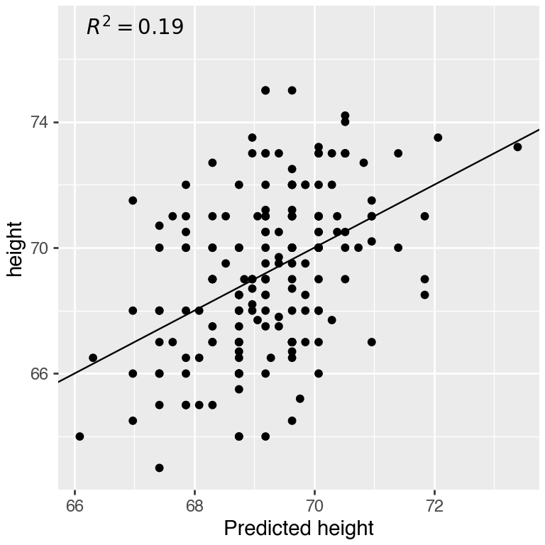
2.6 Testing the relationship between \(y\) and \(x\)
The LSE is derived from the data \(y_1,\dots,y_n\), which are a realization of random variables. This implies that our estimates are random variables. Using the assumption of independent Gaussian noise, we obtain the following distribution:
\[ p(\hat \beta) = N(\beta, \sigma^2/ns^2_x)\]
Hence, if the modeling assumptions hold, the estimates are unbiased, meaning that their expected value are the true values of the parameter \(\mathbb{E}[\hat \beta_1] = \beta_1\). Moreover they are consistent, meaning that for infinitely large sample size they converge to the true values.
Another result allows us to build a hypothesis test, namely: \[p\left(\frac{\hat{\beta_1} - \beta_1}{\hat{se}(\hat{\beta_1})}\right) = t_{n-2}\left(\frac{\hat{\beta_1} - \beta_1}{\hat{se}(\hat{\beta_1})}\right)\] where \(t_{n-2}\) denotes the student’s \(t\) distribution with \(n-2\) degrees of freedom and \[\hat{se}(\hat{\beta_1}) = \sqrt{\frac{1}{n-2}\frac{\sum_i(y_i-\bar{y_i})^2}{\sum_i(x_i-\bar{x_i})^2}}\] As for the t-test presented for comparing two groups in Section Section 8.4.1.1, the degrees of freedom is equal to the number of data points \(n\) minus two, the number of model parameters (\(\beta_0\) and \(\beta_1\)).
Remember, the \(P-\)value of a statistical test is the probability of the value of a test statistic being at least as extreme as the one observed in our data under the null hypothesis.
In our case we can formulate the null hypothesis, that \(y\) does not depend on \(x\) as follows:
- The null hypothesis for parameter \(\beta_1\) is \(H_0: \beta_1 = 0\)
- The test statistic is \(\hat{t} = \frac{\hat{\beta_1} - \beta_1}{\hat{se}(\hat{\beta_1})} = \frac{\hat{\beta_1}}{\hat{se}(\hat{\beta_1})}\)
- The probability under the null model is \(P(t \geq \hat{t}), \mbox{where } t \sim t_{n-2}\)
How do we do this in Python? The summary2().tables[1]. function helps us here. It reports t-statistics (t value) and two-sided \(P-\)values under Pr(>|t|). Indeed, \(P(|t| \geq |\hat{t}|)\) yields the two-sided p-value because the Student’s t-distribution is symmetric.
model.summary2().tables[1]| Coef. | Std.Err. | t | P>|t| | [0.025 | 0.975] | |
|---|---|---|---|---|---|---|
| Intercept | 38.651452 | 4.714218 | 8.198911 | 4.763915e-14 | 29.348145 | 47.954760 |
| father | 0.442552 | 0.068178 | 6.491103 | 8.288243e-10 | 0.308005 | 0.577099 |
3 Diagnostic plots
The assumptions of a mathematical model never hold exactly in practice. The questions for the practitioners are threefold: 1) How badly are the assumptions violated on the dataset at hand? 2) What are the implications for the claimed conclusions? How can the issue be addressed?
The assumptions of linear regressions are:
- The expected values of the response are a linear combinations of the explanatory variables
- Errors are identically and independently distributed.
- Errors follow a normal distribution.
We will see that two diagnostic plots will be helpful: the residual plot and the q-q plot of the residuals.
3.1 Assessing non-linearity with residual plot
Diagnostic plot
Non-linearity is typically revealed by noticing that the average of the residual depends on the predicted values. A smooth fit (geom_smooth default) on the residual plot can help spotting systematic non-linear dependencies (See Figure Fig. 10.3).
# `geom_smooth()` using method = 'loess'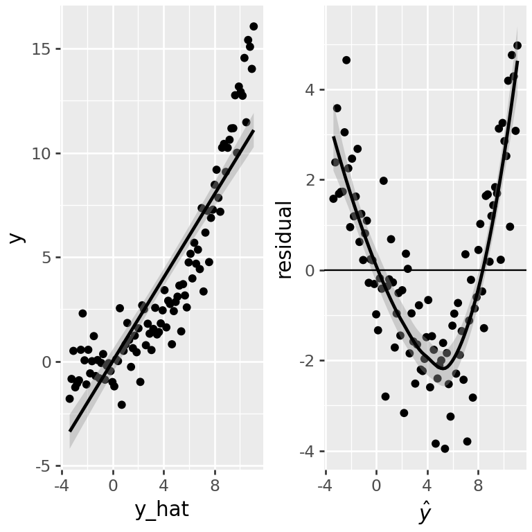
So what? The implications of non-linearity depends on the application purposes:
Predictions are suboptimal. They could be improved with a more complex model. However, they may be good enough for the use case, and they would not necessarily deteriorate on unseen data.
Explained variance is underestimated.
The i.i.d assumption is violated: The residuals depend on the predicted mean, suggesting that the errors depend on \(\mathbb{E}[y|x]\) and therefore on each other. Therefore, statistical tests are flawed.
Conditional dependencies can be affected. To see the latter assume a model in which two variables \(x\) and \(y\) depend on a common cause \(z\) in a non-linear fashion (eg. \(y=z^2 + \epsilon\) and \(x=z^2+\epsilon'\)). These two variables \(x\) and \(y\) are independent conditioned on their common cause \(z\). However, a linear regression of \(y\) on \(x\) and \(z\) would fail to discard the contribution of \(x\).
What to do? If non-linearity is revealed in the fit, one can either transform the explanatory variables or the response (eg log-transformtaion, powers, etc). Note that the appropriate transformation is difficult to know in practice and finding it likely requires trying out several options. The I in Python implements a few convenience functions to build such non-linear transformation on the fly while calling lm(). For instance, the R call: smf.ols('y ~ x + I(x**2) + I(x**3)', data=df) fits a polynomial of degree 3.
3.2 When error variance is not constant: Heteroscedasticity
It happens not so rarely that the variance of the residuals is not constant across all data points. This property is called heteroscedasticity. Heteroscedasticity violates the i.i.d assumption of the errors.
Diagnostic plot
The residual plots can help spotting when error variance depends on response mean. Here is a synthetic example:
x = np.arange(1, 101)
y = np.random.normal(loc=5 * x, scale=0.1 * x)
df = pd.DataFrame({"x": x, "y": y})
m = smf.ols("y ~ x", data=df).fit()
df["y_hat"] = m.fittedvalues
df["resid"] = m.resid
(
ggplot(df, aes("y_hat", "resid"))
+ geom_point()
+ geom_abline(intercept=0, slope=0)
+ labs(x=r"$\hat{y}$", y="residual")
+ theme(figure_size=(4, 4))
)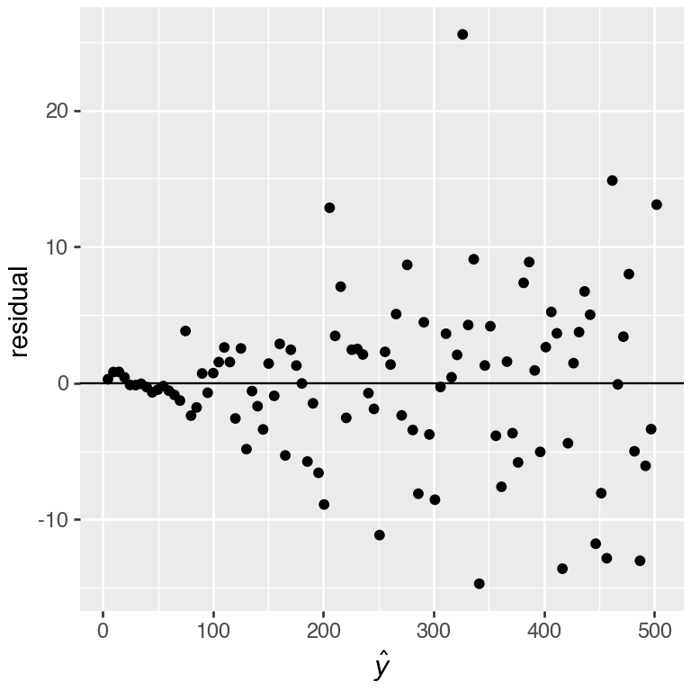
So what? For prediction, the problem may or not be a real issue. Indeed the fit can be driven by a few data points because the least squares errors give too much importance to the points with high noise. This is particularly a problem with low number of points in areas with large noise.
As the residuals are not i.i.d., the statistical tests are flawed.
What to do?
In case of heteroscedasticity, one can try to transform the response variable \(y\), such as: log-transformation, square root, or variance stabilizing transformation 7.
However, as before, the appropriate transformation is difficult to know in practice and finding it likely requires trying out several options. Alternatively, one can use methods with a different noise model. One possibility is to consider weighted least squares, when there is the possibility to estimate before end the relative error variances on the data. This is sometimes the case, for instance, if one has access to experimental uncertainties. Another direction is to use generalized linear models 8
3.3 Gaussianity: Q-Q-plot of the residuals
The Gaussian assumption of the errors is key to all statistical tests. An implication that the errors follow a Gaussian distribution is that the residuals also follow a Gaussian distribution.
Diagnostic plot
We use here a QQ-plot of the residuals against the normal distribution.
The plotnine function stat_qq() and its companion stat_qq_line() generate qq-plot against a Gaussian fitted to the input vector. We do not have to worry about the mean and the standard deviation of the input vector. Here is a “good” example based on simulated data.
np.random.seed(0)
df = pd.DataFrame({
"x": np.arange(1, 101),
"y": np.random.normal(loc=5 * x, scale=10)})
m = smf.ols("y ~ x", data=df).fit()
df_resid = pd.DataFrame({"resid": m.resid})
(
ggplot(df_resid, aes(sample="resid"))
+ stat_qq()
+ stat_qq_line()
+ theme(figure_size=(4, 4))
)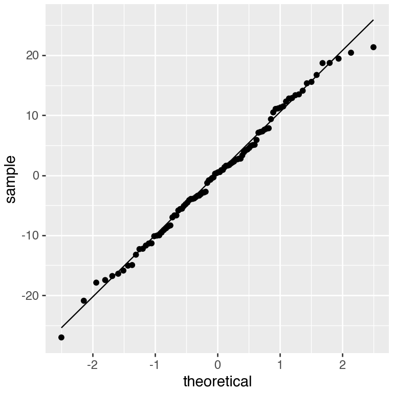
And here is a “bad” example based on a simulated example, in which the errors are Student t-distributed with degree of freedom 1:
np.random.seed(0)
df = pd.DataFrame({
"x": np.arange(1, 101),
"y": np.random.standard_t(df=1, size=100)})
m = smf.ols("y ~ x", data=df).fit()
df_resid = pd.DataFrame({"resid": m.resid})
(
ggplot(df_resid, aes(sample="resid"))
+ stat_qq()
+ stat_qq_line()
+ theme(figure_size=(4, 4))
)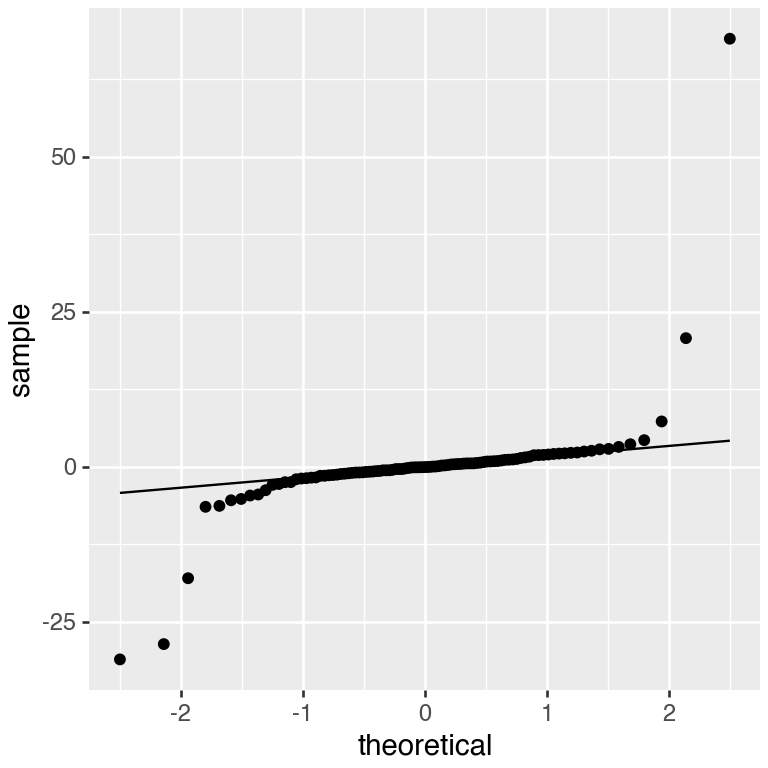
So what? If Gaussianity of the residuals is not satisifed, this means that the noise model is wrong. This can have the following practical implications:
With enough data, the regression lines might not be too severely affected the least squares estimates converge to the expected values. Applying least squares to fit and predict does not depend on the Gaussian assumption!
Hypothesis testing can be flawed.
What to do We may work with fundamentally non-Gaussian data (like Poisson distributed data, which are count data), or data with long tails and outliers. If one has an idea of what could be a better noise model, consider a generalized linear model with another distribution. Alternatively, use case resampling to estimate confidence intervals.
4 Conclusions
Linear models:
- are a powerful and versatile tool
- can be used to
- predict future data
- quantify explained variance
- assess linear relations between variables (hypothesis testing)
- control for confounding (multiple linear regression)
- assumptions need to be checked (diagnostic plots)
- can be generalized for different distributions (GLMs for classification: next lecture)
this is a guessed formula for the sake of the explanation. You will build your own model on true data in the exercise and see why the 0.5 coefficients is probably not correct.↩︎
The popular deep neural networks are able, with enough data, to automatically learn these transformations. Nevertheless, their final operation (so-called last layer), is typically a linear combination as in Eq. 10.3↩︎
See the Wikipedia article on Francis Galton.↩︎
Galton made important contributions to statistics and genetics, but he was also one of the first proponents of eugenics, a scientifically flawed philosophical movement favored by many biologists of Galton’s time but with horrific historical consequences. You can read more about it here: https://pged.org/history-eugenics-and-genetics.↩︎
\(N(x | 0, \sigma^2) = \frac{1}{\sigma\sqrt{2 \pi}} \exp(-\frac{x^2}{2 \sigma^2}).\)↩︎
See the bestseller Thinking, Fast and Slow by Nobel prize–winning psychologist Daniel Kahneman (thank you, Lisa!), or the Wikipedia article on regression toward the mean.↩︎
See the Wikipedia article on variance-stabilizing transformations.↩︎
See the Wikipedia article on Generalized linear model.↩︎